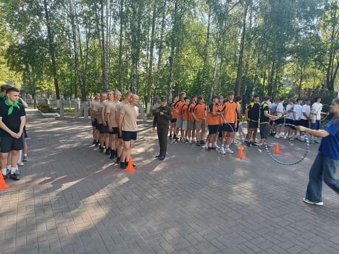
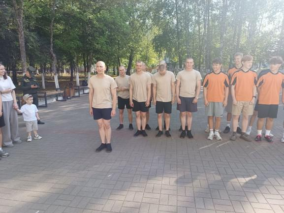
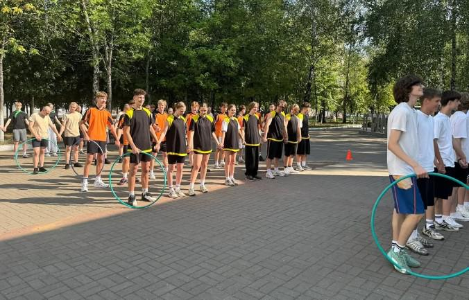
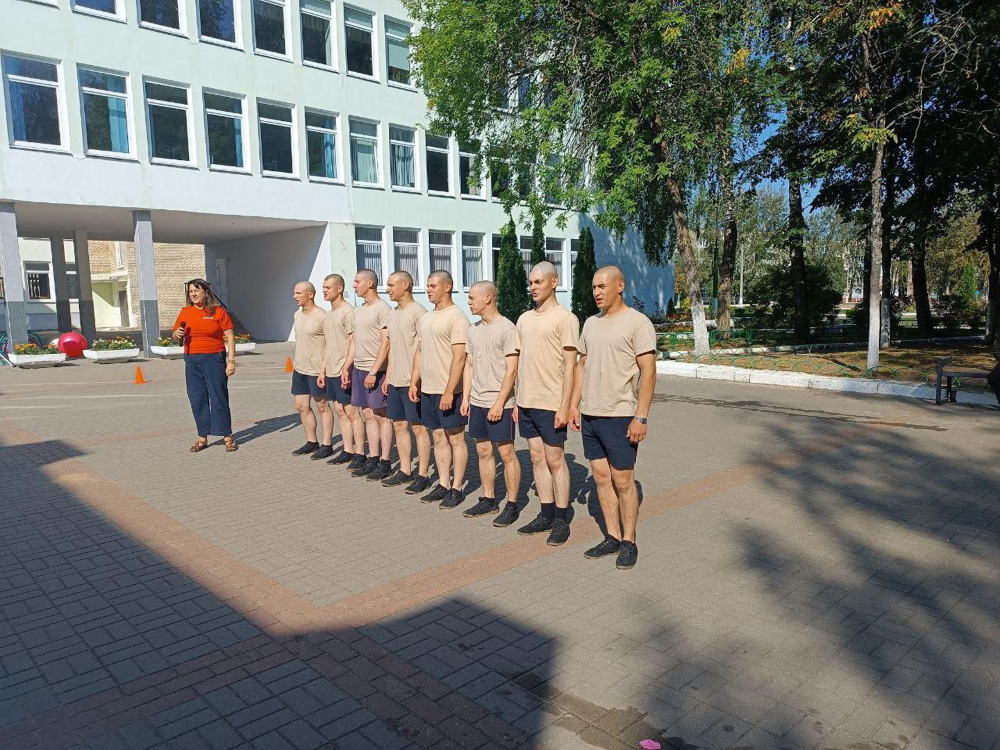
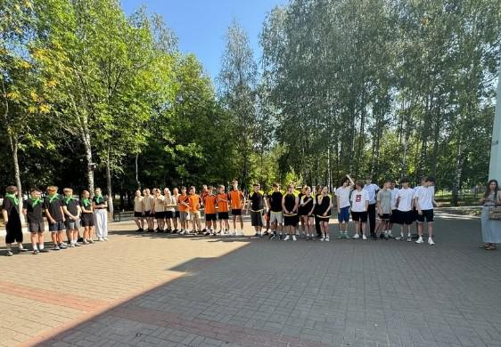
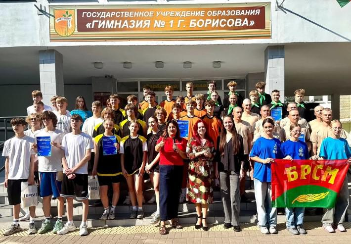

МОЛОДЕЖНЫЙ ДРАЙВ «ГОНКА ЗА ЛИДЕРОМ»
6 сентября 2025 года – важная дата в истории молодёжного движения Республики Беларусь: исполняется 23 года со дня основания Белорусского республиканского союза молодёжи. Эта организация, которая на протяжении многих лет играет ключевую роль в развитии патриотического сознания, гражданской активности и поддержки лидерских качеств в подрастающем поколении.



В честь праздничной даты в гимназии был проведен молодежный драйв «Гонка за лидером», приуроченный ко Дню рождения БРСМ. Мероприятие организовано при поддержке районного комитета ОО «БРСМ» и направлено на сохранение командного духа, здорового образа жизни и патриотического воспитания учащихся. В соревнованиях приняли участие сборные команды учащихся 9-10 классов гимназий №1 и №3, средних школ №7 и №20, а также команда 307-й гвардейской школы по подготовке специалистов мотострелковых и десантных подразделений 72 гв. ОУЦ ПП и МС.


Участники продемонстрировали высокий уровень физической подготовки, выносливость, стратегическое мышление и, главное – настоящий командный дух. Яркие эмблемы, кричалки, поддержка болельщиков и напряжённая борьба до последнего, исключительная атмосфера праздника молодости, энергии и единства.
